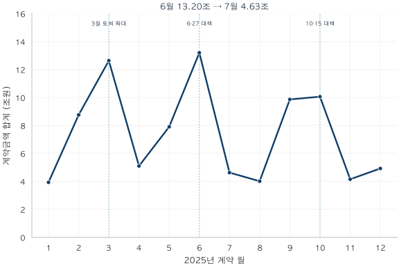
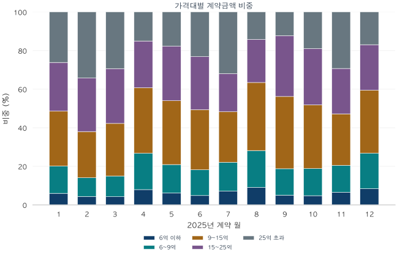

서울 아파트 · 실거래 데이터 노트
거래 10%가 금액 29%를 차지할 때: 서울의 거래금액 읽기
2025년 서울의 12개월 계약금액과 가격대별 비중을 한눈에 읽습니다. 건수와 금액의 차이, 2026년 1분기 고가 거래의 후속 변화를 함께 살펴봅니다.
분석 기간 · 2025년 계약 · 2026년 1분기 후속 관측 | 보유 자료 스냅샷 생성 · 2026-10-04
2025년 11월 서울의 25억 원 초과 아파트 거래는 전체 건수의 10.5%였습니다. 같은 계약들이 거래금액에서는 29.3%를 차지했습니다. 거래 열 건 중 한 건이 금액으로는 열 몫 중 세 몫에 가까워지는 차이입니다. 이 차이는 시장에 참여한 거래의 ‘수’와 ‘크기’를 함께 볼 때 이해할 수 있습니다.
계약 한 건의 무게가 달라집니다
거래량을 셀 때는 5억 원 아파트와 30억 원 아파트가 각각 한 건입니다. 금액을 합칠 때는 후자가 여섯 배의 무게를 갖습니다. 두 거래만 있는 가상의 시장이라면 30억 원 거래의 건수 비중은 50%, 금액 비중은 85.7%입니다. 같은 시장에서도 금액으로 본 그림에는 고가 거래가 더 크게 나타납니다.
월별 계약금액 합계는 이처럼 거래 활동의 규모를 보여줍니다. 여기에 가격대별 금액 비중을 더하면 어떤 계약들이 그 규모를 만들었는지도 읽을 수 있습니다. 먼저 2025년 열두 달의 흐름을 한눈에 보겠습니다.
6월의 큰 봉우리, 7월의 빠른 축소

2025년 합계는 89.16조 원입니다. 3월 12.63조, 6월 13.20조, 10월 10.06조 원의 봉우리가 보입니다. 6월에서 7월로 넘어가며 건수는 9,966건에서 3,608건으로, 금액은 13.20조 원에서 4.63조 원으로 줄었습니다. 계약금액 감소율은 64.9%입니다.
이 전환점에는 6·27 가계부채 관리 강화 방안이 놓여 있습니다. 수도권·규제지역 주택구입 목적 주담대 최대 6억 원 한도와 전입 조건 등이 도입되면서 구매 여건이 달라졌습니다. 높은 거래 규모를 기록한 6월 이후 계약 활동이 크게 작아진 것은 이 시기의 뚜렷한 특징입니다. 정책의 영향과 함께 계약 시점의 이동, 계절 요인도 포함된 관측입니다.
시장의 크기가 줄어도 고가 거래의 몫은 커집니다

25억 원 초과 거래의 금액 비중은 6월 23.1%에서 7월 32.0%로 높아졌습니다. 그러나 이 가격대의 계약금액 자체는 약 3.05조 원에서 1.48조 원으로 줄었습니다. 전체 시장이 더 빠르게 줄면서 고가 계약이 남긴 몫은 상대적으로 커진 것입니다. 위의 총액 그래프와 아래의 비중 그래프를 함께 읽으면 ‘작아진 시장 안에서의 집중’을 확인할 수 있습니다.
9월에는 25억 초과 구간의 금액 비중이 12.3%로 낮아졌고, 9억 초과~15억 이하와 15억 초과~25억 이하가 각각 37.4%, 31.5%를 차지했습니다. 11월에는 두 중간 가격대의 비중이 26.7%, 23.5%로 낮아지는 동안 25억 초과가 29.3%로 커졌습니다. 연중 거래금액을 구성한 가격대가 계속 바뀐 모습입니다.
12월에는 25억 초과 비중이 16.9%로 내려오고, 6억 이하와 6억 초과~9억 이하가 각각 8.4%, 18.4%로 커졌습니다. 11월의 고가 집중은 연말까지 같은 강도로 이어지지는 않았습니다.
| 계약 월 | 전체 건수 | 전체 조원 | 25억 초과 건수 비중 | 25억 초과 금액 비중 |
|---|---|---|---|---|
| 2025-01 | 3,040 | 3.932 | 9.2% | 26.2% |
| 2025-02 | 5,848 | 8.756 | 14.0% | 34.2% |
| 2025-03 | 8,811 | 12.633 | 11.7% | 29.3% |
| 2025-04 | 4,524 | 5.103 | 4.2% | 15.0% |
| 2025-05 | 6,449 | 7.902 | 6.2% | 17.7% |
| 2025-06 | 9,966 | 13.198 | 8.4% | 23.1% |
| 2025-07 | 3,608 | 4.628 | 10.6% | 32.0% |
| 2025-08 | 3,703 | 4.014 | 4.0% | 14.2% |
| 2025-09 | 8,008 | 9.862 | 4.3% | 12.3% |
| 2025-10 | 7,829 | 10.058 | 7.1% | 19.0% |
| 2025-11 | 3,163 | 4.155 | 10.5% | 29.3% |
| 2025-12 | 4,331 | 4.924 | 5.2% | 16.9% |
다섯 가격대의 월별 계약금액·비중 보기
| 월 | 6억 이하 | 6억 초과 9억 이하 | 9억 초과 15억 이하 | 15억 초과 25억 이하 | 25억 초과 |
|---|---|---|---|---|---|
| 1월 | 0.2366.0% | 0.55514.1% | 1.12028.5% | 0.99225.2% | 1.02826.2% |
| 2월 | 0.3834.4% | 0.8499.7% | 2.09723.9% | 2.43127.8% | 2.99634.2% |
| 3월 | 0.5364.2% | 1.35210.7% | 3.44827.3% | 3.58928.4% | 3.70829.3% |
| 4월 | 0.4057.9% | 0.96018.8% | 1.73634.0% | 1.23624.2% | 0.76715.0% |
| 5월 | 0.4846.1% | 1.16914.8% | 2.61633.1% | 2.23428.3% | 1.40017.7% |
| 6월 | 0.6404.9% | 1.76213.3% | 4.11731.2% | 3.62427.5% | 3.05423.1% |
| 7월 | 0.3307.1% | 0.69415.0% | 1.21126.2% | 0.91419.8% | 1.47932.0% |
| 8월 | 0.3669.1% | 0.76619.1% | 1.41635.3% | 0.89722.3% | 0.57014.2% |
| 9월 | 0.4985.1% | 1.35213.7% | 3.69237.4% | 3.10931.5% | 1.21112.3% |
| 10월 | 0.4804.8% | 1.41514.1% | 3.32033.0% | 2.93229.2% | 1.91019.0% |
| 11월 | 0.2736.6% | 0.58014.0% | 1.10826.7% | 0.97723.5% | 1.21729.3% |
| 12월 | 0.4148.4% | 0.90418.4% | 1.61032.7% | 1.16223.6% | 0.83416.9% |
2026년 1분기: 거래 건수는 늘고, 금액은 줄었습니다
연말 이후를 분기 단위로 이어 보면 변화가 더 분명합니다. 2025년 4분기에서 2026년 1분기로 넘어가며 서울 거래는 15,323건에서 15,743건으로 2.7% 늘었습니다. 반면 계약금액 합계는 19.14조 원에서 17.59조 원으로 8.1% 줄었습니다. 더 많은 계약이 성사돼도 금액 합계는 작아질 수 있는 장면입니다.
25억 초과 거래는 1,115건에서 811건으로 27.3% 감소했고, 금액도 3.96조 원에서 3.01조 원으로 23.9% 줄었습니다. 이 구간의 건수 비중은 7.28%에서 5.15%, 금액 비중은 20.70%에서 17.13%로 낮아졌습니다. 4분기 92일, 1분기 90일의 길이 차이를 보정해도 하루 평균 고가 거래는 12.12건에서 9.01건으로 감소합니다.
| 계약 월 | 전체 건수 | 전체 조원 | 25억 초과 건수 비중 | 25억 초과 금액 비중 |
|---|---|---|---|---|
| 2026-01 | 5,121 | 6.013 | 6.0% | 19.0% |
| 2026-02 | 5,479 | 6.129 | 4.8% | 16.4% |
| 2026-03 | 5,143 | 5.448 | 4.6% | 15.9% |
월별로는 1월의 고가 거래가 309건으로 전년 12월 224건보다 늘었다가, 2월 264건, 3월 238건으로 줄었습니다. 같은 세 달 동안 금액 비중도 19.0% → 16.4% → 15.9%로 낮아졌습니다. 12월 이후 줄곧 한 방향으로 움직인 것은 아니지만, 분기 전체로 보면 고가 거래의 존재감은 작아졌습니다.
따라서 11월의 ‘건수 10%, 금액 29%’는 당시 시장 구성을 보여주는 장면으로 이해할 수 있습니다. 2026년 1분기까지 시야를 넓히면, 서울 전체 거래가 회복되는 가운데 고가 구간의 비중이 낮아지는 다음 장면이 나타납니다. 앞선 가격대별 거래량 글에서 살펴본 9억 이하 거래의 확대와도 연결되는 흐름입니다.
건당 평균 계약금액이 10% 내렸다면, 집값도 10% 내렸을까요?
분기 계약금액 합계를 건수로 나누면 계약 한 건의 평균금액이 됩니다. 2025년 4분기 12.49억 원에서 2026년 1분기 11.17억 원으로 10.5% 낮아졌습니다. 이 숫자만 떼어 놓으면 서울 아파트값이 한 분기 만에 10% 넘게 내린 것처럼 읽힐 수 있습니다.
거래를 25억 초과와 25억 이하로 나누면 다른 장면이 보입니다. 25억 초과 거래의 건당 평균은 35.53억 원에서 37.17억 원으로 오히려 높아졌고, 25억 이하 거래는 10.68억 원에서 9.76억 원으로 낮아졌습니다. 그리고 앞에서 본 것처럼 25억 초과 거래의 건수 비중이 7.28%에서 5.15%로 줄었습니다.
4분기의 가격대 비중을 그대로 두고 1분기의 가격대별 평균만 적용하면 건당 평균은 약 11.76억 원입니다. 전체 하락폭 가운데 약 0.58억 원(약 44%)은 고가 거래의 비중이 줄어든 구성 변화, 나머지 약 0.73억 원은 두 가격대 안의 평균 변화로 나뉩니다.
각 가격대의 건수 비중을 w, 건당 평균을 m이라 하면 전체 변화 = Σ[w4분기 × (m1분기 − m4분기)] + Σ[(w1분기 − w4분기) × m1분기]입니다. 첫 집 시리즈 2편과 같은 산술적 분해이며, 기준 시점을 바꾸면 두 항의 크기도 달라집니다. 원인 추정이 아닙니다.
가격대 안의 평균 변화도 같은 집의 가격 하락이라고 단정할 수 없습니다. 같은 기간 25억 이하 거래 안에서도 노도강 거래가 크게 늘어난 지역 구성 변화가 함께 일어났기 때문입니다. 건당 평균은 ‘집값이 얼마나 변했나’보다 먼저 ‘어떤 집이 거래됐나’에 반응합니다.
건수·총액·집중도를 한 줄에 놓아 보세요
11월을 ‘3,163건, 4.155조 원, 25억 초과 금액 비중 29.3%’로 적으면 세 숫자가 서로 다른 질문에 답합니다. 얼마나 많은 계약이 있었는지, 계약의 규모는 얼마나 컸는지, 큰 계약이 어느 정도 차지했는지입니다. 다음 월을 비교할 때도 이 세 숫자를 함께 두면 시장의 크기와 구성을 구별하기 쉽습니다.
앞에서 보았듯 계약금액 합계와 건당 평균은 거래된 지역·면적·가격대에 따라 달라지므로, 같은 집의 가격 변화를 직접 보여주지 않습니다. 또한 이 합계는 계약의 규모입니다. 실제 잔금 지급액이나 대출 실행액, 새로 유입된 현금을 뜻하지 않으며 매물이 팔리는 속도를 직접 측정한 값도 아닙니다.
어디서 거래됐는지, 어떤 가격대가 거래됐는지, 그리고 계약금액이 어디에 모였는지를 연결해 읽어 보세요. 서울 시장의 큰 변화 안에서 내 관심 동네와 예산에 가까운 흐름을 찾는 출발점이 됩니다.
분석 방법·출처·집계 내려받기
분석에 사용한 거래
국토교통부 아파트 매매 실거래가 상세 자료에서 서울 25개 구의 2025년과 2026년 1분기 계약을 집계했습니다. 전용면적 전체를 포함하고 신고일·등기일이 아닌 계약일로 묶었습니다. 중복 병합 후 식별된 해제·직거래, 토지임대부와 정제상 부적격 관측을 제외했습니다. 2025년은 병합 후 77,887건 중 69,280건, 2026년 1분기는 16,758건 중 15,743건을 포함합니다. 공식 전체 거래량 통계와는 포함 기준이 다릅니다.
자료의 기준 시점
2026년 9월 계약분까지 보유한 자료로 2026년 10월 4일 생성한 스냅샷을 사용했습니다. 당시 실시간으로 알 수 있었던 거래량을 복원한 자료는 아닙니다. 이후 신고·정정·해제 반영에 따라 값은 달라질 수 있습니다. 원천의 최신 월인 2026년 9월은 잠정 관측이며 본문 분석에 포함하지 않았습니다.
분모와 가격대
지역 비중은 두 가지입니다. 서울 전체 비중은 25개 구의 거래 건수를, 네 권역 내부 비중은 강남3구·마용성·노도강·금관구 12개 구의 합산 건수를 각각 100%로 둡니다. 두 그래프의 분모를 제목·설명에 구분했습니다. 지역별 재고 세대수로 나눈 회전율은 아닙니다.
다섯 거래가격 구간은 6억 이하, 6억 초과~9억 이하, 9억 초과~15억 이하, 15억 초과~25억 이하, 25억 초과입니다. 경계값은 아래쪽 구간에 포함합니다. 대출한도와 나란히 보는 세 구간 표에서는 앞의 세 가격대를 15억 이하로 합쳤습니다. 실제 대출 규제의 가격 기준은 시가여서 개별 계약의 적용 한도와 일치한다고 볼 수는 없습니다.
건수 비중은 해당 구간 건수÷전체 건수, 금액 비중은 해당 구간 계약금액÷전체 계약금액입니다. 하루 평균은 양끝을 포함한 달력 일수로 나눴으며 계절·영업일 조정은 하지 않았습니다. 2025년 다섯 정책 구간은 순서대로 43·39·96·110·77일로 한 해를 빠짐없이 나눕니다. 2026년 1분기는 90일의 별도 후속 관측입니다. 원천 금액 단위는 만원이며 1조 원은 1억 만원입니다. 반올림한 비중의 합은 100%와 조금 다를 수 있습니다.
해석과 검증
정책 전후의 시장 변화를 관찰한 분석입니다. 대조군·계절 조정·동일 주택 가격 통제 없이 정책 하나의 인과효과를 분리하지 않았습니다. 부분 해제 집계도 해제 단지만의 표본이 아닌 서울 전체이므로 적용 범위와 관측 범위를 구별했습니다.
분기×지역 25개, 월×가격대 75개, 정책·후속 구간×가격대 30개, 같은 구간×지역 30개의 건수와 금액을 별도의 정제 거래 집계와 대조했습니다. 총 160개 공개 셀은 모두 10건 이상입니다. 그림은 동결된 집계로 seaborn 테마·선 그래프와 누적 막대를 작성했습니다. 집계와 정의 내려받기 (JSON). 개별 계약·단지 식별자는 포함하지 않았습니다.
분석·집필: 파파펭귄 (Nobot Kang). 에이전트를 활용해 원문 확인, 계산 검증, 초안과 그림을 작성했습니다.